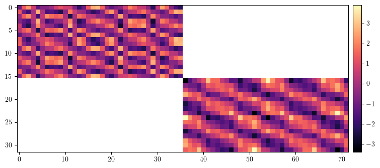
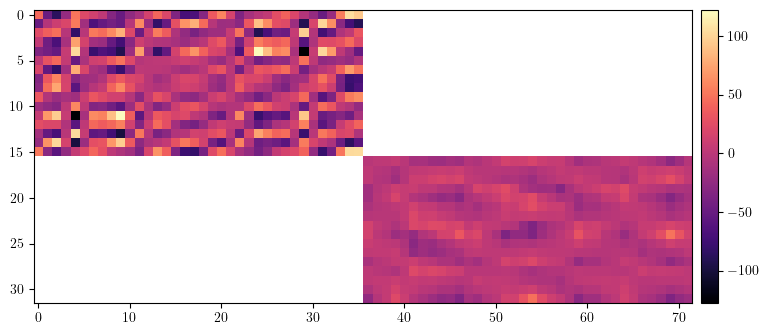
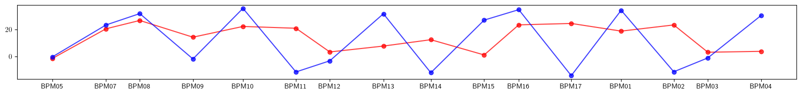
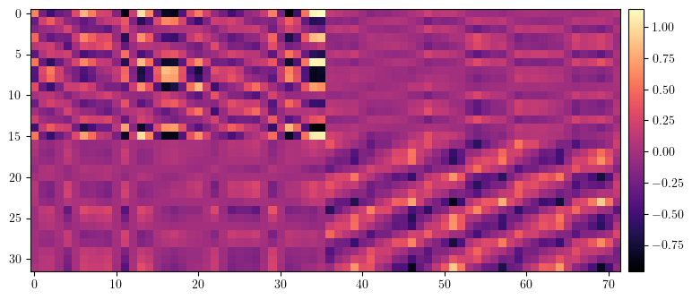
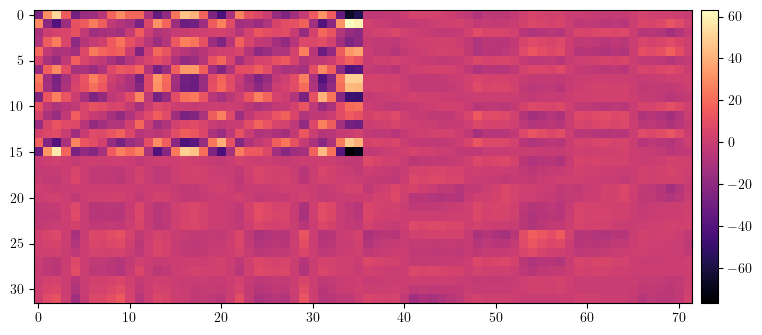
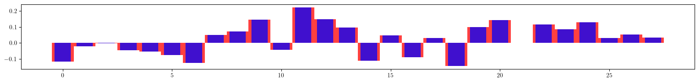
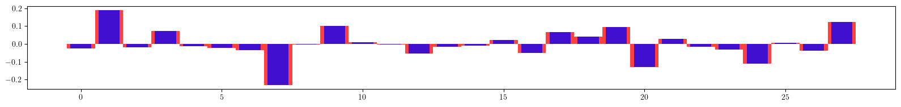
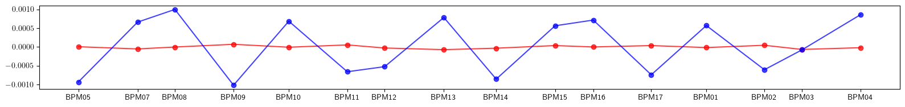

Example-38: Orbit (chromatic ORM)
[1]:
# Import
from pprint import pprint
import torch
from pathlib import Path
import matplotlib
from matplotlib import pyplot as plt
matplotlib.rcParams['text.usetex'] = True
from twiss import twiss
from twiss import propagate
from twiss import wolski_to_cs
from model.library.line import Element
from model.library.corrector import Corrector
from model.library.line import Line
from model.command.util import chop
from model.command.external import load_lattice
from model.command.build import build
from model.command.wrapper import forward
from model.command.wrapper import inverse
from model.command.wrapper import normalize
from model.command.wrapper import Wrapper
from model.command.orbit import orbit
from model.command.orbit import ORM
from model.command.orbit import ORM_DP
[2]:
# Set element data type and devive
Element.dtype = torch.float64
Element.device = torch.device('cuda')
[3]:
# Build and setup lattice
# Quadrupoles are splitted into 2**2 parts, Dipoles -- 2**4 part
# Correctors are inserted between parts
# Load ELEGANT table
path = Path('ic.lte')
data = load_lattice(path)
# Build ELEGANT table
ring:Line = build('RING', 'ELEGANT', data)
ring.flatten()
# Merge drifts
ring.merge()
# Split BPMs
ring.split((None, ['BPM'], None, None))
# Roll lattice start
ring.roll(1)
# Split quadrupoles and insert correctors
nq = 2**2
for name in [name for name, kind, *_ in ring.layout() if kind == 'Quadrupole']:
corrector = Corrector(f'{name}_CXY', factor=1/(nq - 1))
ring.split((nq, None, [name], None), paste=[corrector])
# Split dipoles and insert correctors
nd = 2**4
for name in [name for name, kind, *_ in ring.layout() if kind == 'Dipole']:
corrector = Corrector(f'{name}_CXY', factor=1/(nd - 1))
ring.split((nd, None, [name], None), paste=[corrector])
# Set linear flag in dipoles
for element in ring:
element.alignment = False
if element.__class__.__name__ == 'Dipole':
element.linear = True
if element.__class__.__name__ == 'Sextupole':
element.alignment = True
if element.__class__.__name__ == 'Quadrupole':
element.alignment = True
# Split lattice into lines by BPMs
ring.splice()
# Set number of elements of different kinds
nb = ring.describe['BPM']
nc = ring.describe['Corrector']
nq = ring.describe['Quadrupole']
ns = ring.describe['Sextupole']
[4]:
# Compute closed orbit
fp = 1.0E-3*torch.randn(4, dtype=Element.dtype, device=Element.device)
fp, *_ = orbit(ring, fp, [], alignment=False, limit=8, epsilon=1.0E-12)
# Chop small values
fp = [fp]
chop(fp)
fp, *_ = fp
print(fp)
tensor([0., 0., 0., 0.], device='cuda:0', dtype=torch.float64)
[5]:
# Compute ORM
orm = ORM(ring, fp, [], limit=1, start=0, epsilon=None)
print(orm.shape)
data = orm.clone()
data[data==0.0] = torch.nan
plt.figure(figsize=(34/4, 72/4))
img = plt.imshow(data.cpu().numpy(), cmap='magma', interpolation='nearest')
cax = plt.gcf().add_axes([plt.gca().get_position().x1 + 0.01, plt.gca().get_position().y0, 0.02, plt.gca().get_position().height])
plt.colorbar(img, cax=cax)
plt.show()
torch.Size([32, 72])

[6]:
# Compute ORM derivative with respect to momentum deviation
orm_dp = ORM_DP(ring, fp, [], limit=1, start=0, epsilon=None)
print(orm_dp.shape)
data = orm_dp.clone()
data[data==0.0] = torch.nan
plt.figure(figsize=(34/4, 72/4))
img = plt.imshow(data.cpu().numpy(), cmap='magma', interpolation='nearest')
cax = plt.gcf().add_axes([plt.gca().get_position().x1 + 0.01, plt.gca().get_position().y0, 0.02, plt.gca().get_position().height])
plt.colorbar(img, cax=cax)
plt.show()
torch.Size([32, 72])

[7]:
# Set lattice with focusing errors
error:Line = ring.clone()
nq = error.describe['Quadrupole']
error_kn = 0.1*torch.randn(nq, dtype=Element.dtype, device=Element.device)
error_ks = 0.1*torch.randn(nq, dtype=Element.dtype, device=Element.device)
index = 0
label = ''
for line in error.sequence:
for element in line:
if element.__class__.__name__ == 'Quadrupole':
if label != element.name:
index +=1
label = element.name
element.kn = (element.kn + error_kn[index - 1]).item()
element.ks = (element.ks + error_ks[index - 1]).item()
[8]:
# Setup twiss computation
def task(line):
line:Line = line.clone()
state = torch.tensor(4*[0.0], dtype=Element.dtype, device=Element.device)
matrix = torch.func.jacrev(line)(state)
(nux, nuy), _, w = twiss(matrix)
line.propagate = False
line.matrix = True
state = torch.tensor(4*[0.0], dtype=Element.dtype, device=Element.device)
line(state)
ws = [w]
*ms, _ = line.container_matrix
for m in ms:
w = propagate(w, m)
ws.append(w)
ws = torch.stack(ws)
ax, bx, ay, by = torch.vmap(wolski_to_cs)(ws).T
return (nux, nuy), (ax, bx, ay, by)
# Unperturbed twiss
(nux_model, nuy_model), (ax_model, bx_model, ay_model, by_model) = task(ring)
# Perturbed twiss
(nux_error, nuy_error), (ax_error, bx_error, ay_error, by_error) = task(error)
# Compare twiss
print((nux_model - nux_error).norm())
print((nuy_model - nuy_error).norm())
print()
print((ax_model - ax_error).norm())
print((bx_model - bx_error).norm())
print((ay_model - ay_error).norm())
print((by_model - by_error).norm())
print()
# Plot beta beating
plt.figure(figsize=(16, 2))
plt.plot(ring.locations().cpu().numpy(), 100*((bx_model - bx_error)/bx_model).cpu().numpy(), color='red', alpha=0.75, marker='o')
plt.plot(ring.locations().cpu().numpy(), 100*((by_model - by_error)/by_model).cpu().numpy(), color='blue', alpha=0.75, marker='o')
plt.xticks(ticks=ring.locations().cpu().numpy(), labels=['BPM05', 'BPM07', 'BPM08', 'BPM09', 'BPM10', 'BPM11', 'BPM12', 'BPM13', 'BPM14', 'BPM15', 'BPM16', 'BPM17', 'BPM01', 'BPM02', 'BPM03', 'BPM04'])
plt.tight_layout()
plt.show()
tensor(0.0341, device='cuda:0', dtype=torch.float64)
tensor(0.0089, device='cuda:0', dtype=torch.float64)
tensor(2.4572, device='cuda:0', dtype=torch.float64)
tensor(1.5588, device='cuda:0', dtype=torch.float64)
tensor(2.4890, device='cuda:0', dtype=torch.float64)
tensor(1.5438, device='cuda:0', dtype=torch.float64)

[9]:
# Compute (measure) ORM for lattice with errors
orm_error = ORM(error, fp, [], limit=1, start=0, epsilon=None)
print(orm_error.shape)
data = (orm - orm_error).clone()
data[data==0.0] = torch.nan
plt.figure(figsize=(34/4, 72/4))
img = plt.imshow(data.cpu().numpy(), cmap='magma', interpolation='nearest')
cax = plt.gcf().add_axes([plt.gca().get_position().x1 + 0.01, plt.gca().get_position().y0, 0.02, plt.gca().get_position().height])
plt.colorbar(img, cax=cax)
plt.show()
torch.Size([32, 72])

[10]:
# Compute (measure) ORM derivative for lattice with errors
orm_dp_error = ORM_DP(error, fp, [], limit=1, start=0, epsilon=None)
print(orm_dp.shape)
data = (orm_dp - orm_dp_error).clone()
data[data==0.0] = torch.nan
plt.figure(figsize=(34/4, 72/4))
img = plt.imshow(data.cpu().numpy(), cmap='magma', interpolation='nearest')
cax = plt.gcf().add_axes([plt.gca().get_position().x1 + 0.01, plt.gca().get_position().y0, 0.02, plt.gca().get_position().height])
plt.colorbar(img, cax=cax)
plt.show()
torch.Size([32, 72])

[11]:
# Define parametric ORM + ORM_DP
def jacobian(*args, **kwargs):
return torch.func.jacrev(*args, **kwargs)
def ORM_kn(kn):
return ORM(ring, fp, [kn], ('kn', ['Quadrupole'], None, None), limit=1, start=0, epsilon=None, jacobian=jacobian)
def ORM_ks(ks):
return ORM(ring, fp, [ks], ('ks', ['Quadrupole'], None, None), limit=1, start=0, epsilon=None, jacobian=jacobian)
def ORM_DP_kn(kn):
return ORM_DP(ring, fp, [kn], ('kn', ['Quadrupole'], None, None), limit=1, start=0, epsilon=None, jacobian=jacobian)
def ORM_DP_ks(ks):
return ORM_DP(ring, fp, [ks], ('ks', ['Quadrupole'], None, None), limit=1, start=0, epsilon=None, jacobian=jacobian)
[12]:
# Parametric ORMs are differentiable with respect to deviation groups
# Set deviation tensors
kn = torch.zeros_like(error_kn)
ks = torch.zeros_like(error_ks)
# Compute derivatives of model ORMs and with respect to kn and ks deviations
dorm_dkn = torch.func.jacrev(ORM_kn)(kn).reshape(4*nb*nc, nq)
torch.cuda.empty_cache()
print(dorm_dkn.shape)
dorm_dks = torch.func.jacrev(ORM_ks)(ks).reshape(4*nb*nc, nq)
torch.cuda.empty_cache()
print(dorm_dks.shape)
dorm_dp_dkn = torch.func.jacfwd(ORM_DP_kn)(kn).reshape(4*nb*nc, nq)
torch.cuda.empty_cache()
print(dorm_dp_dkn.shape)
dorm_dp_dks = torch.func.jacfwd(ORM_DP_ks)(ks).reshape(4*nb*nc, nq)
torch.cuda.empty_cache()
print(dorm_dp_dks.shape)
torch.Size([2304, 28])
torch.Size([2304, 28])
torch.Size([2304, 28])
torch.Size([2304, 28])
[13]:
# Set response matrix
# [..., orm_ij, ..., dorm_dp_ij, ....] = M [..., kn_i, ..., ks_i, ...]
response = torch.hstack([torch.vstack([dorm_dkn, dorm_dp_dkn]), torch.vstack([dorm_dks, dorm_dp_dks])])
print(response.shape)
torch.Size([4608, 56])
[14]:
# Test response matrix
result_error = torch.stack([orm_error, orm_dp_error]).flatten()
result = torch.stack([orm, orm_dp]).flatten()
vector = torch.cat([error_kn, error_ks])
print((result_error - (result + 0*(response @ vector))).norm())
print((result_error - (result + 1*(response @ vector))).norm())
tensor(483.8618, device='cuda:0', dtype=torch.float64)
tensor(164.2502, device='cuda:0', dtype=torch.float64)
[15]:
# Perform correction (model to experiment)
lr = 0.5
kn = torch.zeros_like(error_kn)
ks = torch.zeros_like(error_ks)
for _ in range(32):
orm_fit = ORM(ring, fp, [kn, ks], ('kn', ['Quadrupole'], None, None), ('ks', ['Quadrupole'], None, None), limit=1, start=0, epsilon=None, jacobian=jacobian)
orm_dp_fit = ORM_DP(ring, fp, [kn, ks], ('kn', ['Quadrupole'], None, None), ('ks', ['Quadrupole'], None, None), limit=1, start=0, epsilon=None, jacobian=jacobian)
result_fit = torch.stack([orm_fit, orm_dp_fit]).flatten()
dkn, dks = (- lr*torch.linalg.lstsq(response, (result_fit - result_error), driver='gels').solution).split((nq, nq))
kn += dkn
ks += dks
print((result_fit - result_error).norm())
# Plot final quadrupole settings
plt.figure(figsize=(16, 2))
plt.bar(range(len(error_kn)), error_kn.cpu().numpy(), color='red', alpha=0.75, width=1)
plt.bar(range(len(kn)), +kn.cpu().numpy(), color='blue', alpha=0.75, width=0.75)
plt.tight_layout()
plt.show()
plt.figure(figsize=(16, 2))
plt.bar(range(len(error_ks)), error_ks.cpu().numpy(), color='red', alpha=0.75, width=1)
plt.bar(range(len(ks)), +ks.cpu().numpy(), color='blue', alpha=0.75, width=0.75)
plt.tight_layout()
plt.show()
tensor(483.8618, device='cuda:0', dtype=torch.float64)
tensor(165.7608, device='cuda:0', dtype=torch.float64)
tensor(54.7430, device='cuda:0', dtype=torch.float64)
tensor(30.1470, device='cuda:0', dtype=torch.float64)
tensor(17.5798, device='cuda:0', dtype=torch.float64)
tensor(11.3230, device='cuda:0', dtype=torch.float64)
tensor(7.7388, device='cuda:0', dtype=torch.float64)
tensor(5.4908, device='cuda:0', dtype=torch.float64)
tensor(3.9718, device='cuda:0', dtype=torch.float64)
tensor(2.9000, device='cuda:0', dtype=torch.float64)
tensor(2.1269, device='cuda:0', dtype=torch.float64)
tensor(1.5630, device='cuda:0', dtype=torch.float64)
tensor(1.1498, device='cuda:0', dtype=torch.float64)
tensor(0.8462, device='cuda:0', dtype=torch.float64)
tensor(0.6231, device='cuda:0', dtype=torch.float64)
tensor(0.4590, device='cuda:0', dtype=torch.float64)
tensor(0.3383, device='cuda:0', dtype=torch.float64)
tensor(0.2494, device='cuda:0', dtype=torch.float64)
tensor(0.1840, device='cuda:0', dtype=torch.float64)
tensor(0.1358, device='cuda:0', dtype=torch.float64)
tensor(0.1002, device='cuda:0', dtype=torch.float64)
tensor(0.0740, device='cuda:0', dtype=torch.float64)
tensor(0.0547, device='cuda:0', dtype=torch.float64)
tensor(0.0404, device='cuda:0', dtype=torch.float64)
tensor(0.0299, device='cuda:0', dtype=torch.float64)
tensor(0.0221, device='cuda:0', dtype=torch.float64)
tensor(0.0163, device='cuda:0', dtype=torch.float64)
tensor(0.0121, device='cuda:0', dtype=torch.float64)
tensor(0.0089, device='cuda:0', dtype=torch.float64)
tensor(0.0066, device='cuda:0', dtype=torch.float64)
tensor(0.0049, device='cuda:0', dtype=torch.float64)
tensor(0.0036, device='cuda:0', dtype=torch.float64)


[16]:
# Apply corrections
lattice:Line = error.clone()
index = 0
label = ''
for line in lattice.sequence:
for element in line:
if element.__class__.__name__ == 'Quadrupole':
if label != element.name:
index +=1
label = element.name
element.kn = (element.kn - kn[index - 1]).item()
element.ks = (element.ks - ks[index - 1]).item()
[17]:
# Compare twiss parameters with model before and after correction
(nux_model, nuy_model), (ax_model, bx_model, ay_model, by_model) = task(ring)
(nux_error, nuy_error), (ax_error, bx_error, ay_error, by_error) = task(error)
(nux_lattice, nuy_lattice), (ax_lattice, bx_lattice, ay_lattice, by_lattice) = task(lattice)
# Before
plt.figure(figsize=(16, 2))
plt.plot(ring.locations().cpu().numpy(), 100*((bx_model - bx_error)/bx_model).cpu().numpy(), color='red', alpha=0.75, marker='o')
plt.plot(ring.locations().cpu().numpy(), 100*((by_model - by_error)/by_model).cpu().numpy(), color='blue', alpha=0.75, marker='o')
plt.xticks(ticks=ring.locations().cpu().numpy(), labels=['BPM05', 'BPM07', 'BPM08', 'BPM09', 'BPM10', 'BPM11', 'BPM12', 'BPM13', 'BPM14', 'BPM15', 'BPM16', 'BPM17', 'BPM01', 'BPM02', 'BPM03', 'BPM04'])
plt.tight_layout()
plt.show()
# After
plt.figure(figsize=(16, 2))
plt.plot(ring.locations().cpu().numpy(), 100*((bx_model - bx_lattice)/bx_model).cpu().numpy(), color='red', alpha=0.75, marker='o')
plt.plot(ring.locations().cpu().numpy(), 100*((by_model - by_lattice)/by_model).cpu().numpy(), color='blue', alpha=0.75, marker='o')
plt.xticks(ticks=ring.locations().cpu().numpy(), labels=['BPM05', 'BPM07', 'BPM08', 'BPM09', 'BPM10', 'BPM11', 'BPM12', 'BPM13', 'BPM14', 'BPM15', 'BPM16', 'BPM17', 'BPM01', 'BPM02', 'BPM03', 'BPM04'])
plt.tight_layout()
plt.show()

